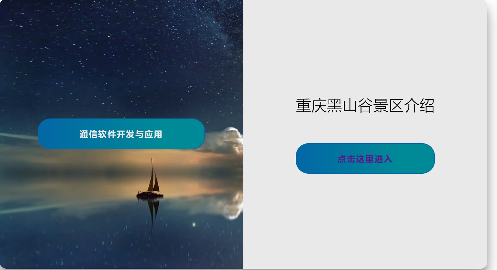
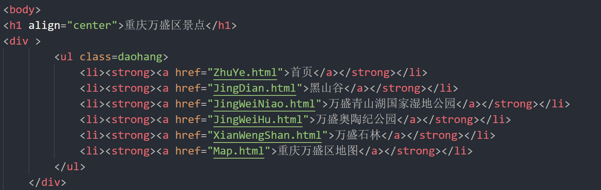

我根据课程结业要求，选择A主题，即静态网站,可使用你喜欢的任何CSS框架如BootStrap、MDB、tailwind等，页面不少于5个，最后一个页面放置结业报告的超链接。网站需部署到你喜欢的托管服务器上如github等。
撰写结业报告，要求如下：
A. 题目为《通信软件开发与应用》课程结业报告；
B. 报告需阐述：做的什么、开发过程、遇到的问题、如何解决、哪些未解决、总结；
C. 该报告需表现为HTML格式，从你上面的网站中可访问到。
由于最近重庆高温不断且学校即将放假，我计划去黑山谷避暑游玩，因此想到选择黑山谷旅游介绍这一主题来完成我的课程设计。
我做的是一个比较简单的网页，所以就选择了html+css+一点点js来进行设计。在开始实施之前，我们要先对网页进行简单布局，由于是旅游类的的网页，所以我首先将网页分为题目，导航栏部分，文章内容三部分，根据导航栏景点划分为：首页，黑山谷，青山湖湿地公园，奥陶纪公园，万盛石林，以及万盛区的地图，最后对于导航栏分别对每个部分进行具体的代码编写和实现。

这是网页的主题所在，以及还有导航条的设置，它可以快速锁定所需要的内容，是网页开发极其重要的内容。导航条使用了一个< nav >标签，其内容包括三个部分，包括< a >超链接，来实现网页的快速跳转，< button >按钮来实现点击，区块，用于放置各个导航超链接。头部主题布局如下
头部主题部分的代码为

以及它的css设置代码为
这一部分选用了图文结合的方式，文字中介绍了黑山谷的位置，历史，以及对其的评价，图片则更好的呈现黑山谷美丽的自然风光，网页图片如下
这一部分选用了图文结合的方式，文字中介绍了奥陶纪的位置景区平面图，主要项目以及奥陶纪的事迹，图片则更好的呈现奥陶纪惊险刺激的高空项目，网页图片如下
问题1：首先是在做封面的时候，想要把封面正中的标题作为透明色且在鼠标落在该处时，改变颜色，表示这里可能有链接，通过查阅资料文字透明我加了一个类的css来实现的，颜色的改变用刚加的类的：hover实现的。
问题2：然后是布局的问题，图片大小不一，加进来很乱，起初我还不知道怎么设置把他想得挺复杂的，后来发现自己糊涂了，设置成一样的宽高就可以了。还有两个页面跳转部分，我想实现动态效果，但奈何代码水平一般，自己弄了很久都不美观，所以最后采用了网络大神类似的模板，然后进行改写，实现了当前效果。
问题3：在github上运行时部分网络图片无法加载成功。解决方法：把无法在github上加载成功的图片下载到本地，然后上传到github上，直接在在github上调用该图片，之后在github上运行时可以成功加载。
本次课程中，我对于web网页前端有了相应的了解，对HTML、CSS、JavaScript等有了比较详细的了解，由于制作动态网页Angular的相关知识比较难理解，所以这里我学的比较差。通过本次结业作业，使我对web开发的前端“三剑客”有了更加深入的理解，对于制作一个静态网页的方法和相关知识更加熟悉。